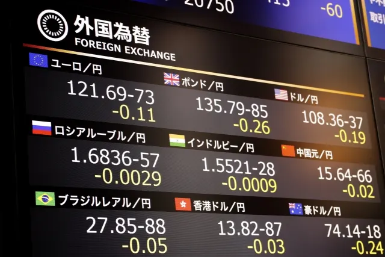

FXはやめとけと言われる理由は？初心者でも失敗しない始め方


こんな人におすすめ
- 知識や経験がないままFXに手を出して損をしてしまった
- 悪質なFX業者に騙されてしまった
- 短期間で大きな利益を得られるという誘惑につい負けてしまった
「FXを始めたいけど、初心者には難しい」と思っている人も多いのではないでしょうか。たしかに、FXで大損したという話もよく聞きますよ。FXは投資のひとつであり、リスク管理や市場の動向を予測する能力が求められます。未経験者がFXで失敗しないためには、リスクを抑えて始めることが大切です。
この記事では、ファイナンシャルプランナーの筆者が、自身の経験をもとにFXをはじめるにあたって「知っておくべき知識」と「失敗の回避方法」を紹介します。最後まで読むことで、初心者でも失敗せず投資ができるようになるので、ぜひ参考にしてください。
「FXはやめとけ」と言われる理由
FXを始めようと思い知人に相談したら「やめとけ」と言われた、検索したら「大損した」などの情報を目にしたことがある人も多いのではないでしょうか。一方で「FXは投資初心者に向いている」といった意見もあります。
そもそも、なぜ「やめとけ」と言われるのでしょうか。理由は5つあります。
- ギャンブルだと思われている
- 損をするリスクがある
- レバレッジを理解していない
- 時間を拘束されると思われている
- FX詐欺の被害にあいやすいと思われている
一度は耳にしたことがあるのではないでしょうか。
1. ギャンブルだと思われている
安いときに購入して、高く売ったときの差額が収益になるのがFXです。FXは上がるか下がるかしかありません。価格変動が激しい一方で、短期間で大きな利益が得られる特徴があります。しかし、大きな損失が出るリスクもあるため、ギャンブルと混同されがちです。
何も知識がなく、何をどうすれば良いかわからないまま始めれば、ギャンブルになってしまうことも少なくありません。ギャンブルはあくまでも「運」で結果が決まります。一方、FXなどの投資は「根拠（原因）」で結果が決まるのです。たとえば、各国の経済状況や、世界情勢で為替レートが変動することで価格（結果）が決まります。
つまり、ギャンブルは完全に運なので予測はできませんが、FXは分析で予測が可能です。このように、FXは運ではないため、ギャンブルではありません。
2. 損をするリスクがある
FXはあくまでも投資のため、利益が出ずに資金が減る可能性はあります。投資で利益を出している人も毎回利益が出ているわけではなく、損失よりも利益のほうが多いというだけです。1回も予想が外れたことがない人はいません。たとえわずかな金額でも「絶対に損をしたくない」のであれば、投資はやるべきではないでしょう。
投資はギャンブルではないので、勉強やリスク管理を行うことで成功率を高められるのが特徴です。「やめとけ」という人の多くは、許容を超えたリスクを取り大損したことがある人に多い傾向があります。 しかし、自分が許容できるリスクの範囲で投資すれば、大損することはありません。
3. レバレッジを理解していない
FXは資金の25倍までの取引ができる「レバレッジ」という仕組みがあります。たとえば、レバレッジを5倍にすれば、利益は5倍になる一方で、損失も5倍です。このように、レバレッジは大きな取引ができる分、大きな利益を狙えますが、相場が逆に動くと大損するリスクが高くなります。
FXで失敗する人は「レバレッジをかけすぎている」ことも原因のひとつです。レバレッジをかければ、少ない資金でも大きく利益を出すことも可能ですが、その分損失が出るリスクもあるため、レバレッジをかけた取引には注意しましょう。初心者は「レバレッジ3倍以下」で取引するのがおすすめです。
4. 時間を拘束されると思われている
FX取引において、常にチャートを見る必要があると思っている人も少なくありません。1日のうち、どれくらい時間を使うかは、取引スタイルや戦略によって異なります。以下は代表的な取引手法と取引スパンです。
| 手法 | 特徴 | 取引スパン |
| スキャルピング | 短期間で多くの利益を出す手法 | 数秒~数分に複数回 |
| デイトレード | 短期間で多くの利益を出す手法 | 1日に複数回 |
| スイングトレード | 中長期で安定した利益を出す手法 | 1週間で1~2回 |
| ポジショントレード | 長期的に安定した利益を出す手法 | 数週間〜1年に1回 |
「スキャルピング」と「デイトレード」は短期間で何回も取引を繰り返す手法で、「スイングトレード」と「ポジショントレード」は、売るタイミングを待つ手法です。時間を拘束されると思っている人の多くは、スキャルピングのイメージが強い傾向にあります。
しかし、短期取引のスキャルピングは初心者向けではありません。取引回数を増やせば、その分取引コストも増えるので経験者向けの手法です。初心者は中長期で利益を出す手法をおすすめします。
5. FX詐欺の被害にあいやすいと思われている
FXでの詐欺被害は、海外のFX会社であることがほとんどです。国内では金融商品取引法に基づき、金融庁への登録・届出が義務付けられています。つまり、適切な資本金や業務運営の規則、顧客資金の保護など、一定の基準や要件が設けられているので安心です。しかし、海外FX会社は無登録のまま運営していることがあるので、国内のFX会社を使うようにしましょう。
詐欺などの被害にあった人の多くは無登録の会社を使ったケースがほとんどです。
「FXはやめとけとばよかった」とならないための始め方7選
FXは大きく儲かる方法よりも、失敗を抑える方法を学ぶことの方が重要です。ここからは、初心者が失敗しないための始め方を7つ紹介します。
- FXの勉強をする
- 余裕資金で投資する
- 少額から始める
- リスクを管理する
- デモトレードで練習する
- 自分なりのルールを決める
- FX会社を適当に選ばない
どれも重要なのでしっかり覚えておきましょう。
1. FXの勉強をする
そもそも、FXを理解せず始めてしまうと失敗しやすくなります。最低でも次のことは勉強しておきましょう。
- FXの仕組みや用語
- 注文方法
- 決済方法
- 分析方法
- デモトレードでアウトプットする
2. 余裕資金で投資する
FXに限らず、投資は余裕資金で行うことが鉄則です。万が一、損失が出た場合、精神的なダメージが大きいだけでなく、冷静な判断ができなくなり、さらに損失が大きくなる可能性があります。生活資金を使うことや借金して投資するのはやめましょう。
3. 少額から始める
FXは投資リスクを伴う取引です。十分な経験や知識を持っていない場合は、少額の資金で始めることでリスクを抑えられます。目先の利益を追わず、損失を少なくすることを重視するのが大切です。少額でもコツコツと利益を出していき、中長期で資金を増やしましょう。
4. リスクを管理する
FXはプラスの時もあればマイナスのときもあるため、マイナスを最小限にするために、しっかり「リスク管理」を行いましょう。たとえば、レバレッジをかけすぎることや、あまり知らない通貨は避けたほうが安全です。損失を最小限に抑えれば大きく損失を出すことが避けられます。
5. デモトレードで練習する
いきなりFX取引を始めると損失のリスクが高くなるため、ある程度の慣れや操作の練習をした上で始めることをおすすめします。ほとんどのFX会社が、実際のお金を使用しない「デモ取引」で取引を体験できるサービスを提供しています。これらを利用して練習することで、コツや流れをつかむとよいでしょう。
6. 自分なりのルールを決める
リスクを抑えながら安定した収益を出すには「レートが何％上がったら確定する」など、自分なりのルールを決めましょう。また、FX取引で損失を出してしまう人に多いのが「損切り」のタイミングを逃してしまうパターンです。初心者のうちは判断が難しいため「何％下がったら損切りするか」を決めると損失を抑えられます。
7. FX会社を適当に選ばない
FX会社を選ぶときは、金融庁に登録している会社を選ぶことはもちろん、会社によって特徴があるので、自分の投資スタイルに合った会社選びが必要です。どこのFX口座を利用すればよいかわからない人のために、少額からでも始められるおすすめのFX会社を紹介します。
| 会社名 | 取引単位 | 購入する際のコスト | 特徴 |
| GMOクリック証券 | 1000通貨 | 米ドル/円 0.2銭 | ツールが使いやすい |
| みんなのFX | 1000通貨 | 米ドル/円 0.2銭 | 分析ツールが使える |
| SBI FXトレード | １通貨 | 米ドル/円 0.18銭 | １通貨から取引可能 |
FXはやめとけと言われる人によくある質問

最後に、よくある質問に回答するので参考にしてください。
FXは土日祝でも取引できますか？
土日はマーケットが営業していないため取引はできません。
ただし、祝日は営業しているため取引ができます。
FXで出た利益に税金はかかりますか？
FX取引によって得た利益は課税対象のため、年間20万円以上の利益が出た場合は税金を納めなければなりません。
利益に対して20.315%が課税されます。源泉徴収されないので確定申告が必要です。
FXの口座は誰でも解説できますか？
講座解説には審査があり、必ず通るとは限りません。審査基準は公表されていませんが、投資額が年収を上回っているなど、資金と投資額のバランスが悪いと落ちやすくなります。
投資額は年収の50%までに抑えましょう。
まとめ
「FXはやめとけ」と言う人の多くは利益が出せていません。FXは投資なので利益が出ることもあれば、損失が出ることもあります。ギャンブルではないため、分析によって損失を抑えることは可能ですが「プロのトレーダーでも損失は出る」ことは覚えておきましょう。
ギャンブル感覚で投資すれば、生活に影響を及ぼしかねません。FXは「勝ち負けを繰り返しながらお金を増やしていくこと」だと心がけましょう。まずは、資金を減らさない練習を積んでいくことが重要です。今回紹介した始め方を参考に、周りから「FXはやめとけ」と言われても気にせず、リスクを抑えながらFXにチャレンジしましょう。
DMM.com証券なら初心者でも「使いやすいツールの利用」や「デモ取引」ができます。アプリもあるのでスマホからでも取引可能なのでおすすめです。
採用・人事やAI活用のご相談を受け付けています
記事の執筆、採用支援、AI導入支援など、まずはお気軽にご相談ください。
ご相談はこちら